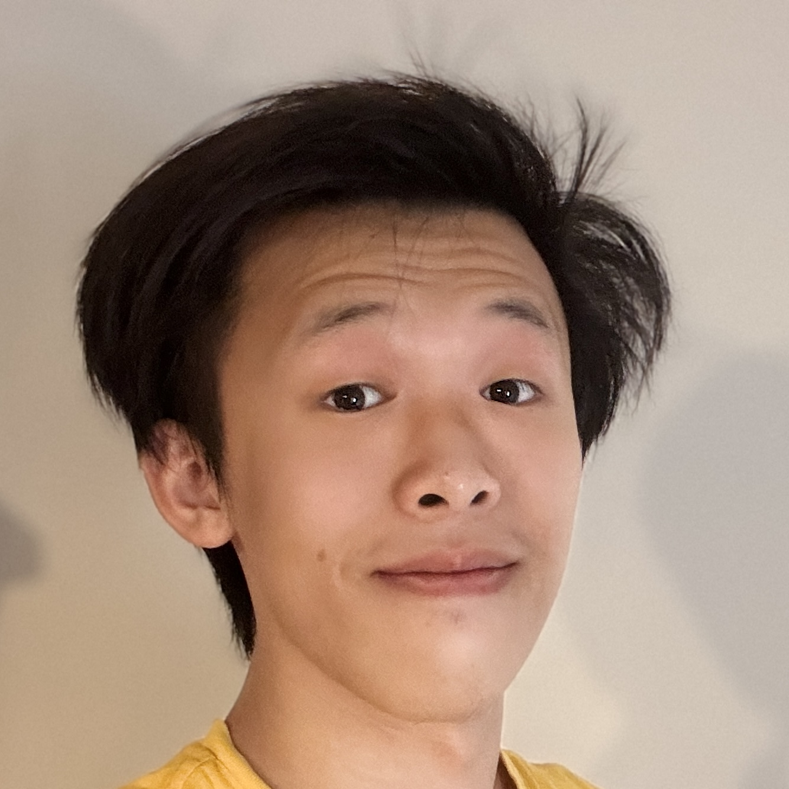

I am Harry Huang (Wenyuan Huang, 黄问远), a senior majoring in Mathematics and Computer Science at the University of Wisconsin–Madison. My research interests include various topics on large language models — specifically agents, continual learning, and LLM reasoning — along with a strong passion for Operating Systems and Machine Learning Systems.
I am an active competitive programmer (ICPC and OI). I won three NOIP (CSP-S) First Prizes prior to college and was a member of the champion team of the 2024 ICPC NCNA Regional (see school news). I previously served as a co-coach of the UW–Madison ICPC team for the 2025–2026 season (see school news).
Outside of academics, I enjoy sports (badminton, swimming, ice skating, bouldering) and music. I started playing piano at 4 and began learning the cello in college. After nearly three years of orchestral experience, I currently serve as the principal cellist of the UW–Madison All-University String Orchestra.